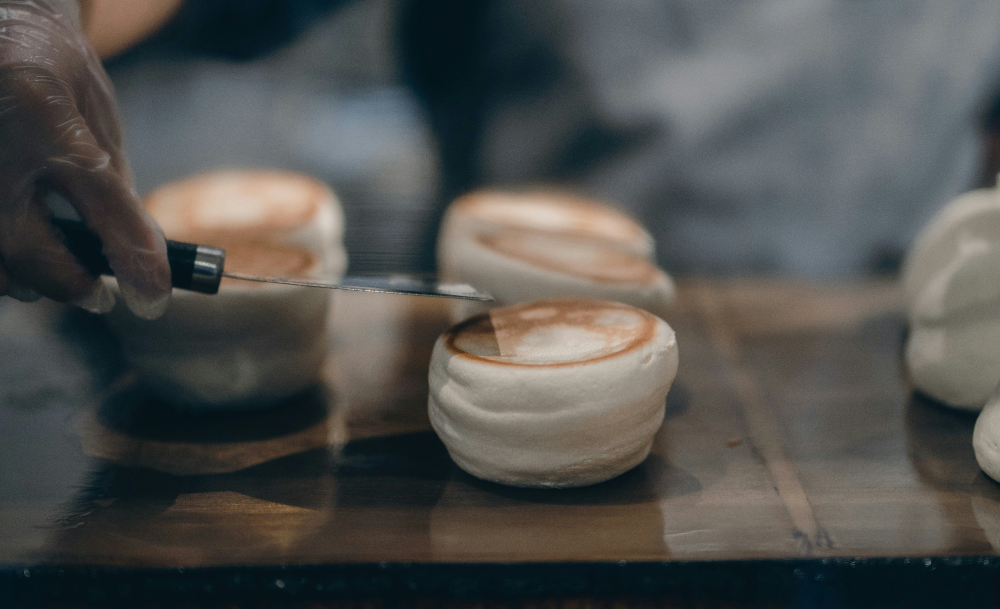

Fluffy Japanese Pancakes

Description
Thick, yet airy pancakes that are difficult to master. Adorn with fruit for a burst of flavor.
Ingredients
- 2 eggs, separated
- 1 1/2 cups all-purpose flour
- 1/4 cup white sugar
- 2 tsp baking powder
- 1/2 tsp baking soda
- 1 1/4 cups buttermilk
- 1/4 cup melted butter
- 1/2 tsp vanilla extract
Steps
- Beat egg whites in a medium sized bowl until stiff peaks form. The egg will be fluffy. Do not overbeat the eggs, as your pancake's fluffiness may be compromised!
- Add butter to your pan. Place molds in the pan over low heat. (These are either metal or silicone). Cover the pan.
- In a seperate bowl, mix flour, sugar, baking powder, and baking soda.
- In another seperate bowl, combine buttermilk, egg yolks, butter, and vanilla extract. Add flour mixture and then stir until batter is smooth.
- Fold egg whites into batter until combined.
- Pour 1/2 cup of batter into each mold and cover the pan. Cook until bubbles foam at top of pancake, around 5-8 minutes. Flip the pancakes in their molds (this part is tricky!) and cook until the pancakes are set, 3-5 minutes more.
- Top with syrup, fruit, or whatever you desire. Enjoy!
Recipe credit, by allrecipes.com